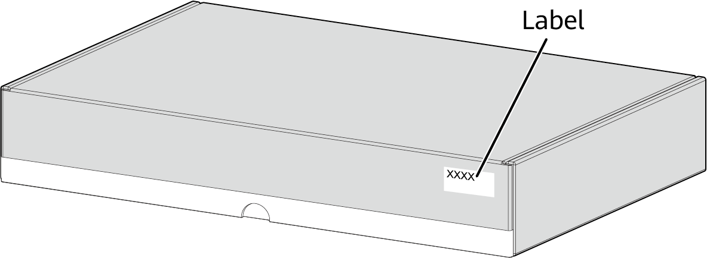
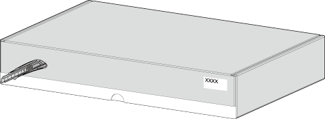
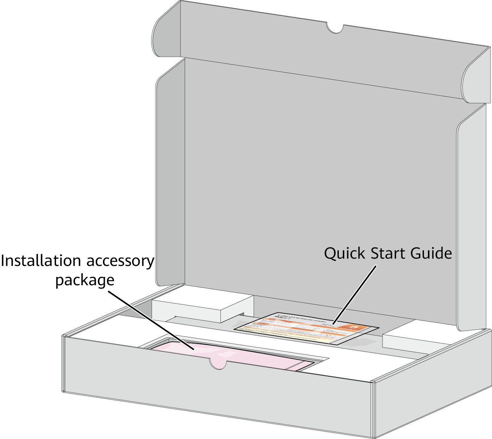
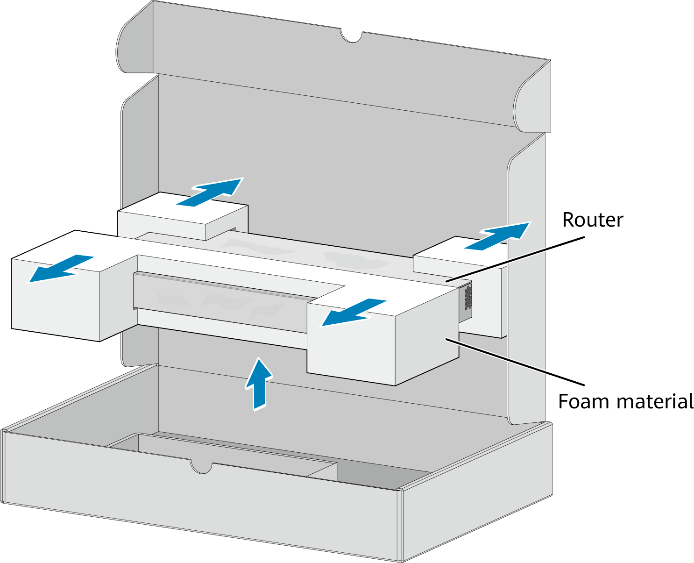
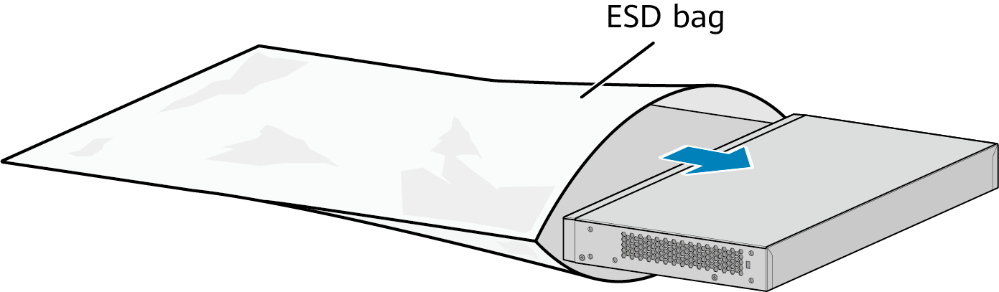

Unpacking the Router
Context

- Before opening the package, check whether the seal label or package is damaged. If there are signs of damage, stop unpacking and contact the supplier. If all packages are intact and the number of packages is correct, unpack the packages to check the equipment and components.
- Cartons of routers vary according to router dimensions, but the same unpacking method is used.
- Do not unpack the router until you are ready to begin installation. Moving an unpacked router over a long distance may cause damages to the router.
- If the router is found eroded or damped, stop unpacking, check for the reason, and contact the supplier.
- Wear gloves or take other protection measures to prevent hand injuries when unpacking a carton.
- Keep the cartons safe for future transportation of the routers.
Tools
- Protective gloves
- Utility knife
Procedure
- Check the label on the carton to confirm whether the router model is correct and learn about precautions to take.

- Use a utility knife to cut the adhesive tape around the cover of the carton.

- Open the carton and take out the installation accessory package and the Quick Start Guide package.

The Quick Start Guide manual may be included in the installation accessory package or packaged independently.
- Take the router out of the carton and remove the foam packing materials.

- Take the router out of the ESD bag and check router surfaces and the warranty seal on the router. If the warranty seal is damaged, stop unpacking and contact the supplier. Huawei is unable to provide warranty services if the warranty seal is damaged or removed.

- Check whether the nameplate on the router is consistent with the label on the carton. The nameplate is attached to the bottom of the router.
Follow-up Procedure
Save the installation accessory package for later use. The installation accessory package contains the following items: ground cable, screws, mounting brackets, Quick Start Guide manual, and warranty card.
The type and quantity of items in an installation accessory package vary depending on the product model.